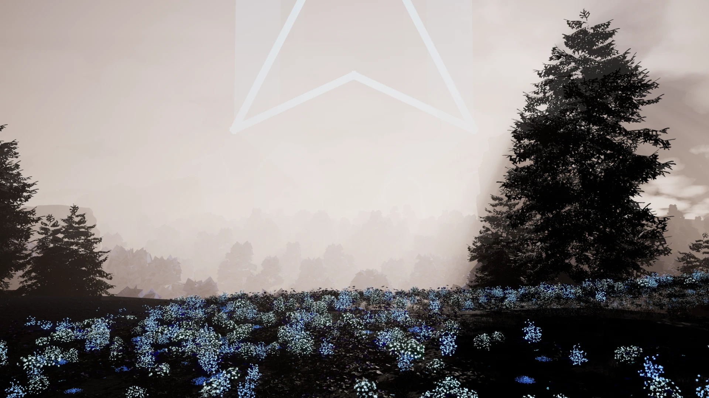
From the crest: the valley drowned in mist, cliffs stepping back paler, the crystal standing out of it.
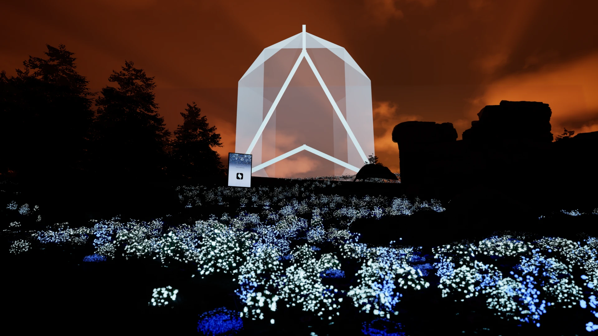
Dawn: the one warm palette. A low gold sun beside the crystal, violet sky, the field still blue.
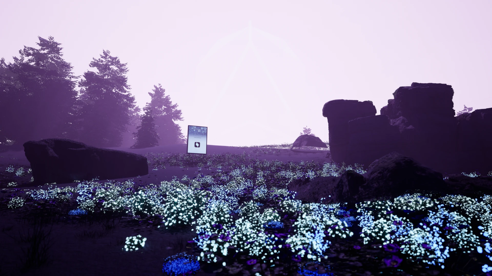
Saturated violet mist, the crystal lit from above through a break in dark cloud.
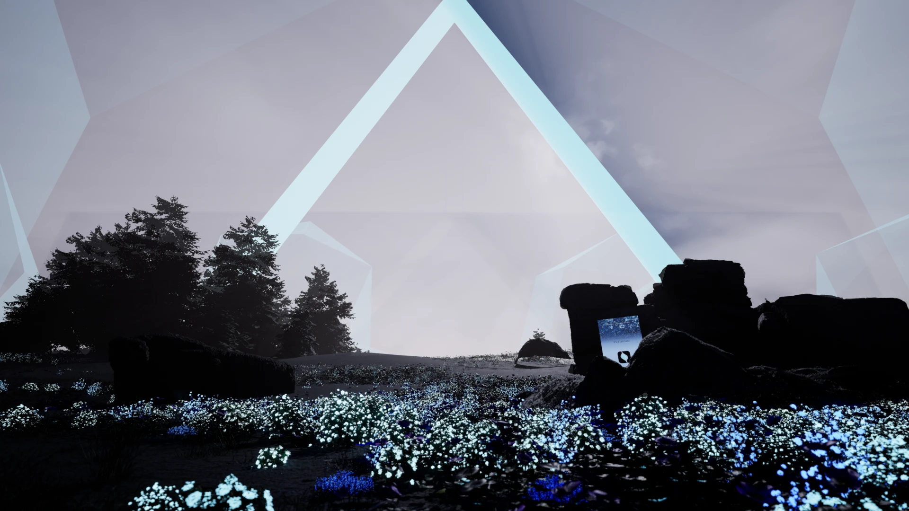
Close under the crystal: its base rising out of the flowers, scale overhead.
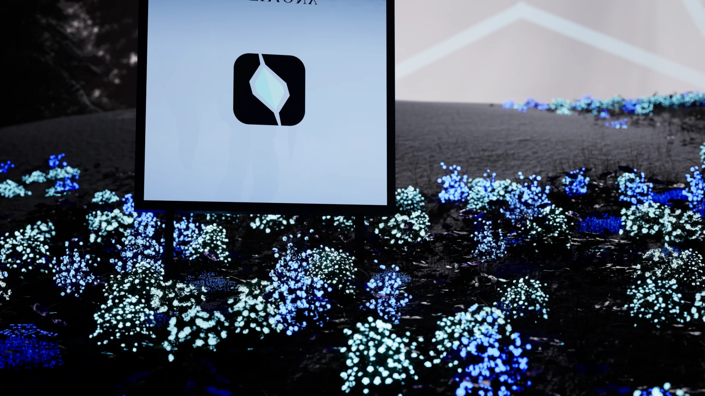
The poster close in the flowers, lit from within; the crystal soft behind it.
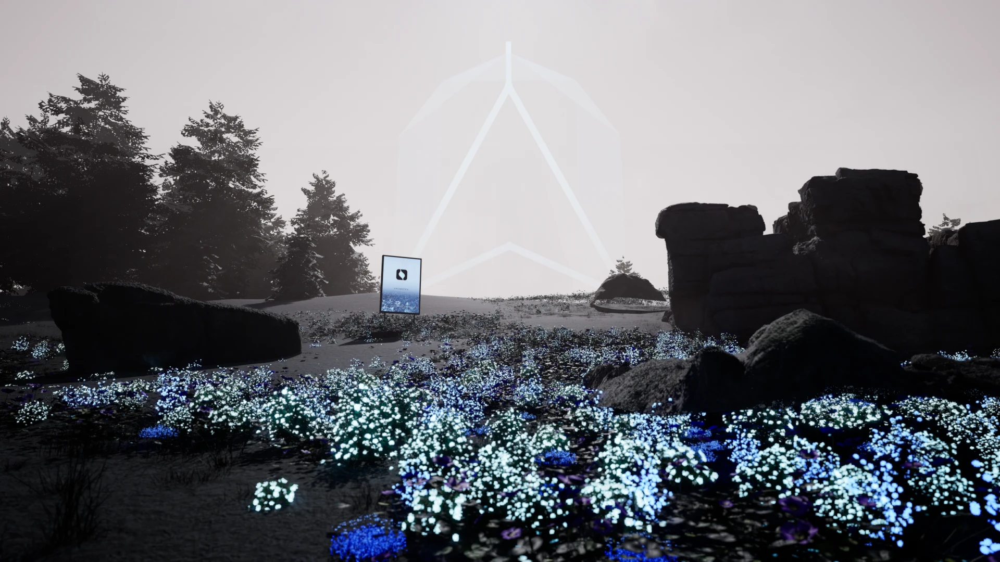
High key, almost white: firs as ink in the mist, the crystal a pale ghost, the flowers the only colour.
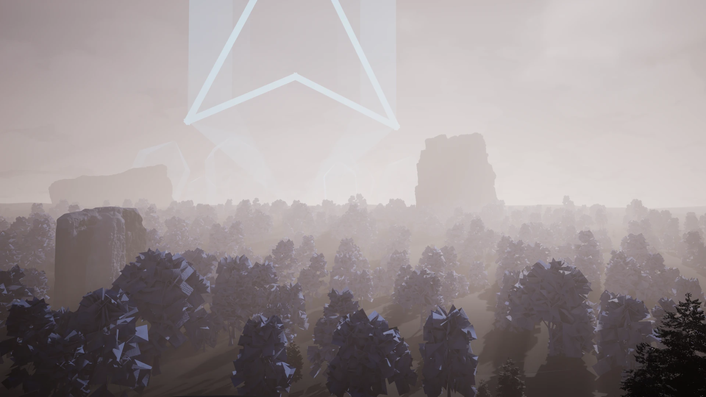
Wide and high: the land falling to the valley, the crystal on the far side, light across the hills.
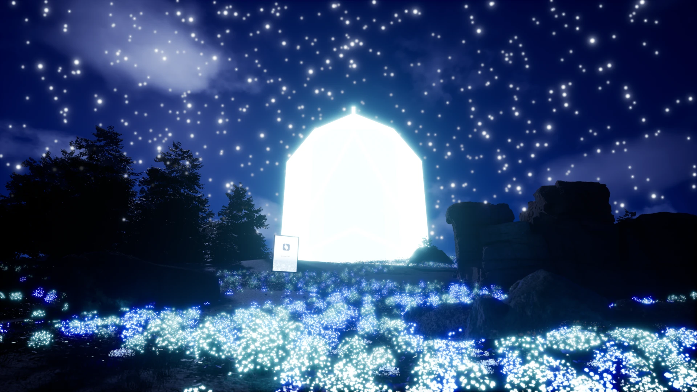
Clear night: stars dense overhead, the crystal the brightest thing, the field answering its light.
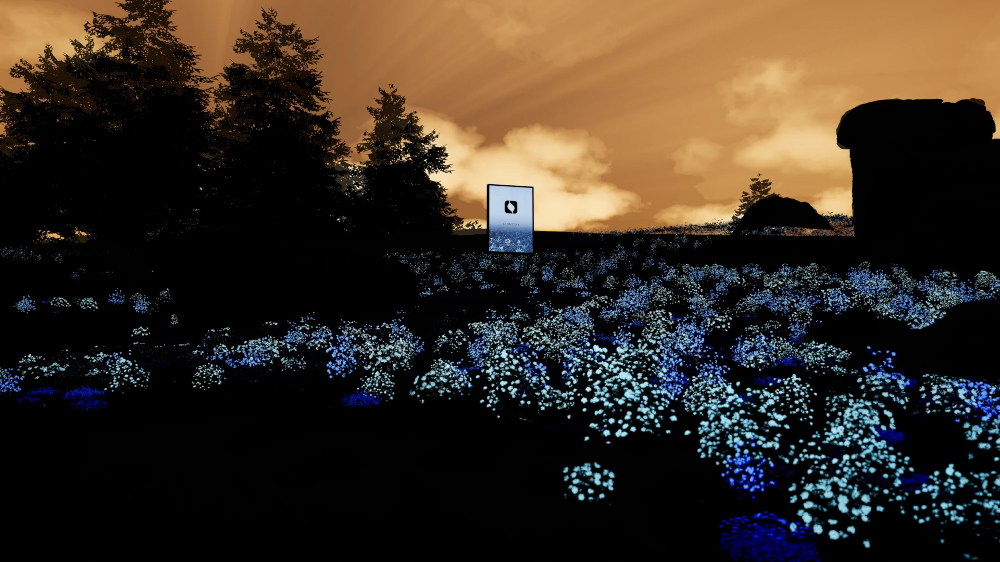
Low sun through the firs, rays across the mist, the print standing in the flowers.
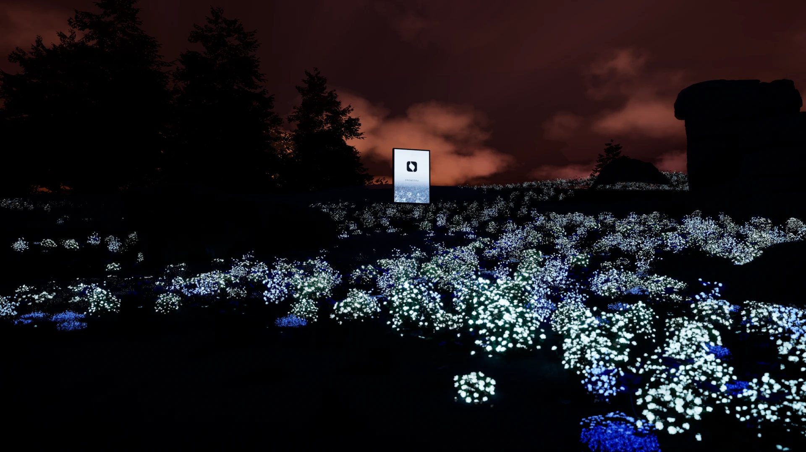
After sunset: the sky a cold gradient, the field and the print glowing softly in the mist.
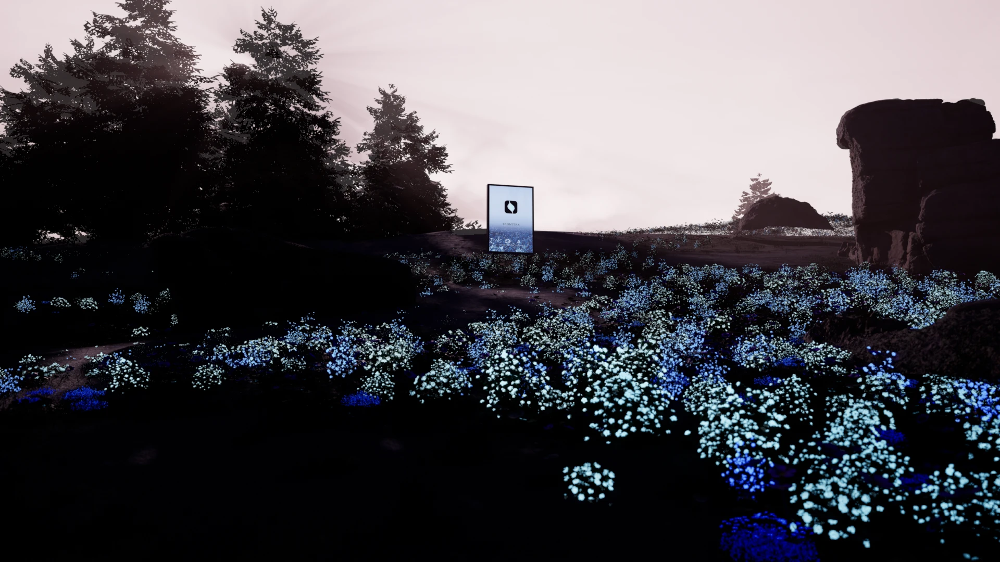
High hazy sun, violet air, firs and cliffs stepping back paler, the print the one clear thing.